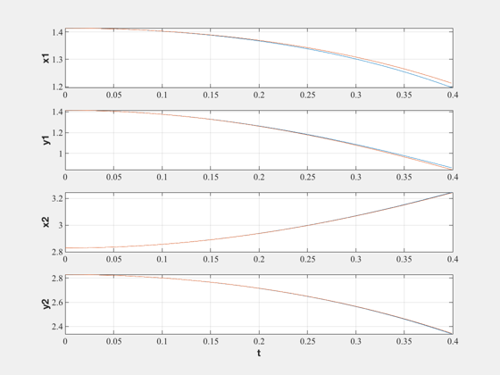
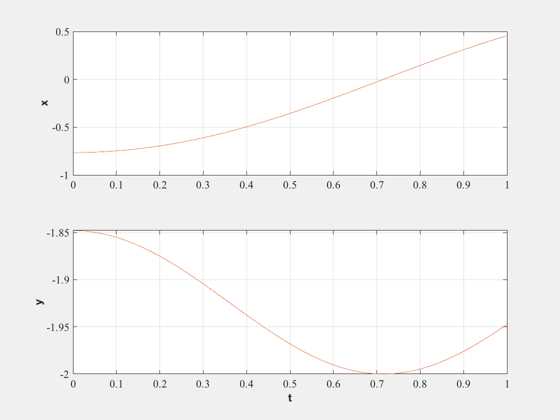

Example 4.2 and 4.3 in the reference.
We are using RK4 for this example but would use RK45 in practice since it has error checking.
------------------------------------------------------------------------- See also NewFig, XLabelS, YLabelS, RK4 -------------------------------------------------------------------------
Contents
%-------------------------------------------------------------------------- % Copyright (c) 1996 Princeton Satellite Systems. % All rights reserved. %-------------------------------------------------------------------------- % Since version 2. %-------------------------------------------------------------------------- fprintf('Pendulum with Sliding Mass\n--------------------------\n\n') nSim = 400; dT = 0.001;
Pendulum with Sliding Mass --------------------------
System properties
%-------------------
m1 = 1;
m2 = 2;
L = 4;
g = 9.806;
Solve in independent coordinates
%---------------------------------- q = [2; pi/4; 0; 0]; xIPlot = zeros(4,nSim); tic for k = 1:nSim q = RK4( 'FIC', q, dT, 0, m1, m2, L, g ); xIPlot(:,k) = [q(1)*cos(q(2));... q(1)*sin(q(2));... L*cos(q(2));... L*sin(q(2))]; end tI = toc; fprintf('Time for the independent coordinate method %8.3f sec\n',tI);
Time for the independent coordinate method 0.061 sec
Solve in dependent coordinates
%-------------------------------- x = [2;2;4;4;0;0;0;0]*cos(pi/4); alpha = 1e7; mu = 0.7071; omega = 1.0; dynData = [m1 m2 g]; constData = L^2; penalty = [alpha 2*mu*omega omega^2]; xDPlot = zeros(4,nSim); nIts = 5; tic for k = 1:nSim x = RK4( 'FDC', x, dT, 0, 'Dyn', 'KConst', dynData, constData, penalty, nIts ); xDPlot(:,k) = x(1:4); end tD = toc; fprintf('Time for the Lagrange Multiplier method %8.3f sec\n',tD); fprintf('The Lagrange method with %i iterations takes %3.0f%% longer\n',nIts, 100*(tD/tI - 1));
Time for the Lagrange Multiplier method 0.207 sec The Lagrange method with 5 iterations takes 240% longer
Plot the results
%------------------ t = dT*(0:(nSim-1)); NewFig('Independent Coordinates') subplot(4,1,1) plot(t,xIPlot(1,:),t,xDPlot(1,:)) YLabelS('x1') grid subplot(4,1,2) plot(t,xIPlot(2,:),t,xDPlot(2,:)) YLabelS('y1') grid subplot(4,1,3) plot(t,xIPlot(3,:),t,xDPlot(3,:)) YLabelS('x2') grid subplot(4,1,4) plot(t,xIPlot(4,:),t,xDPlot(4,:)) YLabelS('y2') XLabelS('t') grid %---------------------------------------------------------------------------------------------------
Single pendulum
%--------------------------------------------------------------------------------------------------- fprintf('\nSingle Pendulum\n---------------\n\n') nSim = 1000;
Single Pendulum ---------------
System properties
%-------------------
m = 1;
L = 2;
g = 9.806;
Solve in independent coordinates
%---------------------------------- q = [pi/8; 0]; xIPlot = zeros(2,nSim); tic for k = 1:nSim q = RK4( 'FICP', q, dT, 0, L, g ); xIPlot(:,k) = -L*[ sin(q(1));... cos(q(1))]; end tI = toc; fprintf('Time for the independent coordinate method %8.3f sec\n',tI);
Time for the independent coordinate method 0.068 sec
Solve in dependent coordinates
%-------------------------------- x = -L*[sin(pi/8);cos(pi/8);0;0]; alpha = 1e7; mu = 0.7071; omega = 1.0; dynData = [m g]; constData = L^2; penalty = [alpha 2*mu*omega omega^2]; xDPlot = zeros(2,nSim); nIts = 5; tic for k = 1:nSim x = RK4( 'FDC', x, dT, 0, 'DynP', 'KConstP', dynData, constData, penalty, nIts ); xDPlot(:,k) = x(1:2); end tD = toc; fprintf('Time for the Lagrange Multiplier method %8.3f sec\n',tD); fprintf('The Lagrange method with %i iterations takes %3.0f%% longer\n',nIts, 100*(tD/tI - 1));
Time for the Lagrange Multiplier method 0.522 sec The Lagrange method with 5 iterations takes 664% longer
Plot the results
%------------------ t = dT*(0:(nSim-1)); NewFig('Independent Coordinates') subplot(2,1,1) plot(t,xIPlot(1,:),t,xDPlot(1,:)) YLabelS('x') grid subplot(2,1,2) plot(t,xIPlot(2,:),t,xDPlot(2,:)) YLabelS('y') grid XLabelS('t') %---------------------------------------------------------------------------------------------------
Slider Crank
%--------------------------------------------------------------------------------------------------- fprintf('\nSlider Crank\n------------\n\n') nSim = 1000;
Slider Crank ------------
System properties
%-------------------
m = 1;
L = 2;
g = 9.806;
Solve in dependent coordinates
%-------------------------------- x = -L*[sin(pi/8);cos(pi/8);0;0]; alpha = 1e7; mu = 0.7071; omega = 1.0; dynData = [m g]; constData = L^2; penalty = [alpha 2*mu*omega omega^2]; xDPlot = zeros(2,nSim); nIts = 5; tic for k = 1:nSim x = RK4( 'FDC', x, dT, 0, 'DynP', 'KConstP', dynData, constData, penalty, nIts ); xDPlot(:,k) = x(1:2); end tD = toc; fprintf('Time for the Lagrange Multiplier method %8.3f sec\n',tD); fprintf('The Lagrange method with %i iterations takes %3.0f%% longer\n',nIts, 100*(tD/tI - 1));
Time for the Lagrange Multiplier method 0.306 sec The Lagrange method with 5 iterations takes 348% longer
Plot the results
%------------------ t = dT*(0:(nSim-1)); NewFig('Independent Coordinates') subplot(2,1,1) plot(t,xIPlot(1,:),t,xDPlot(1,:)) YLabelS('x') grid subplot(2,1,2) plot(t,xIPlot(2,:),t,xDPlot(2,:)) YLabelS('y') grid XLabelS('t') %--------------------------------------